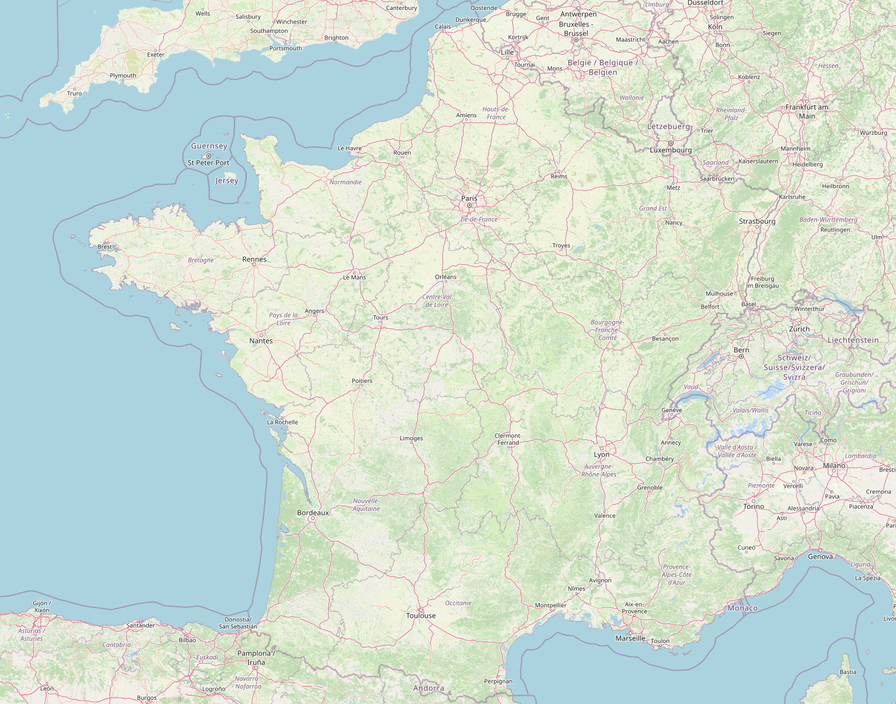
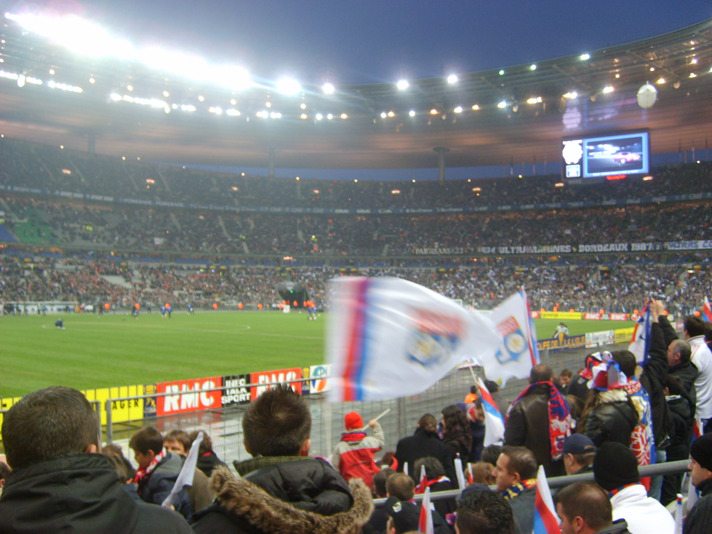
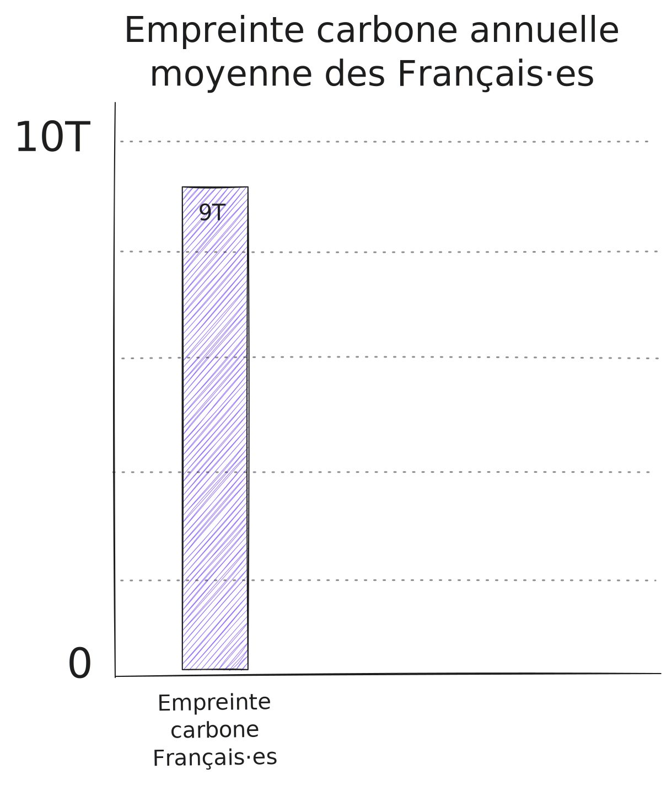
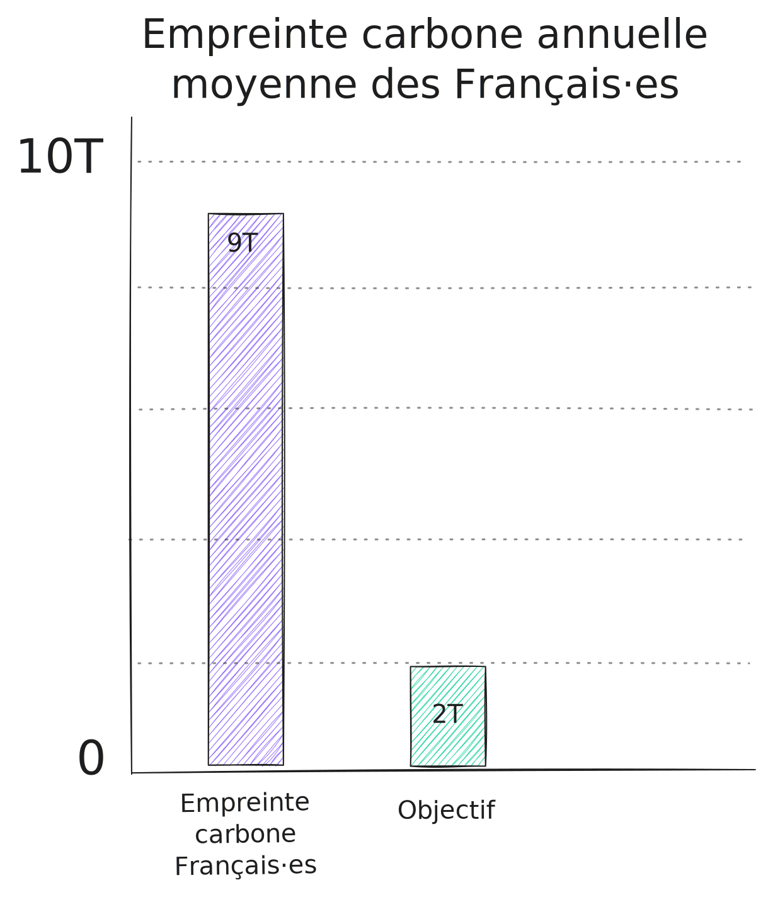
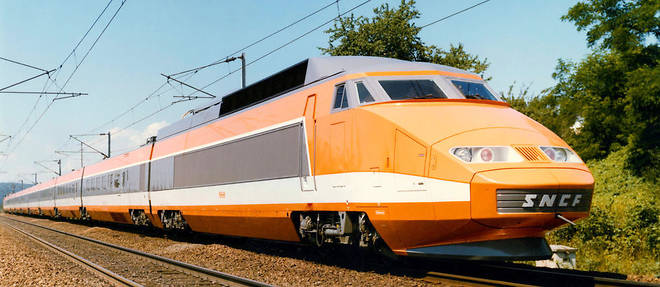
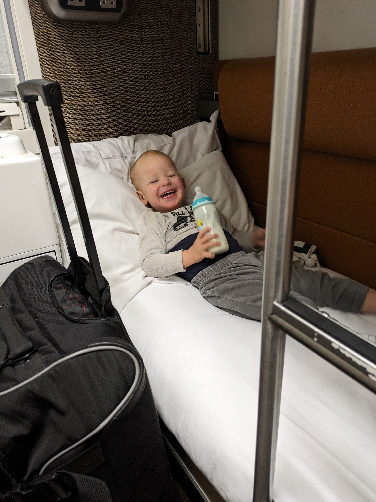
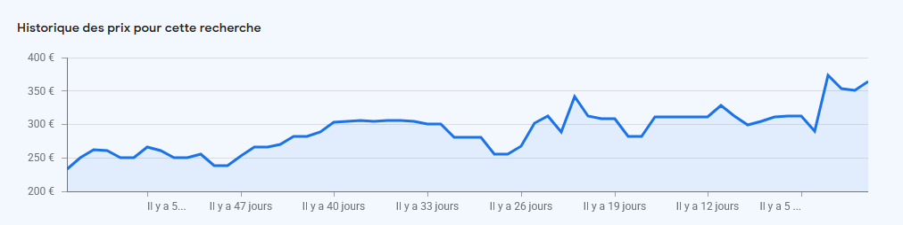

Voyager autrement
(et avec des enfants)
Coucou !

📍
📍
📍
📍
📍
📍
📍
📍
📍
📍
📍
📍
📍
📍

🚗
Lyon → Paris → Lyon
Sauf que…
La planète brûle !

OSEF : j'aime bien le chaud !
Mais
🧒 + 👶 + 🌍 = 🔮
Si on peut leur éviter ça…


« Rien ne développe l’intelligence comme les voyages. » – Émile Zola
« Il faut voyager pour apprendre. » – Mark Twain
« Je n’ai pas encore été partout, mais c’est sur ma liste. » – Susan Sontag
« Voyager c’est vivre. » – Hans Christian Andersen
« Une fois par an, visitez un lieu où vous n’êtes jamais allé auparavant. » – Dalai Lama
« Qui traverse la vie voit de nombreuses choses.
Qui voyage en voit bien davantage. » – Proverbe arabe
Le train : le moyen de transport du futur !

- Julien : Pour le week-end à Barcelone, on part quand ? Parce qu'il faut prévoir deux jours pour le voyage…
- Morgane : Sinon je sais que t'es pas fan, mais on peut y aller en avion ?
En plus c'est quand même super cher le train !
Mythe n°1 : le train c'est super long
| Avion | Train | |
|---|---|---|
| Durée | 1 h 30 | 5 h 00 |
| Rejoindre la gare / l'aéroport (pour un citadin) | 1 h | 30 min |
| Aller à Montjuic | 30 min | Vous y êtes déjà ! |
| Temps pour embarquement | 1-2 h (sécurité, embarquement, bagages) | 10 min |
| Total | ~ 4 h 30 | ~ 6 h |
Oui mais si je veux partir loin ?

Oui mais si je veux partir très loin ?
Shanghai par exemple !
Mythe n°2 : le train c'est cher
Vacances de la toussaint
(2 adultes + 2 enfants)
| Avion ✈️ | 🚅 Train | |
|---|---|---|
| Lyon - Berlin | ~ 1500 € | ~ 800 € |
| Lyon - Edimbourg | ~ 1500 € | ~ 1800 € (merci l'eurostar) |
La tarification dynamique 📈
Exemple ici avec Lyon - Berlin
Slow travel
🌲🌳🌲🌳🌲🌳🌲🌳🌲🌳🌲🌳🌲
🌲🌳🌲🌳🌲🌳🌲🌳🌲🌳🌲🌳🌲
🚗
🌲🌳🌲🌳🌲🌳🌲🌳🌲🌳🌲🌳🌲
🌲🌳🌲🌳🌲🌳🌲🌳🌲🌳🌲🌳🌲
🚴